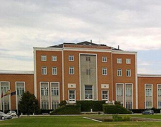

Localización
El banco de semillas y la colección in vitro se encuentran en dos sedes de la Ciudad Universitaria de Madrid.
Sede principal — banco de semillas
La sede principal del Banco de Germoplasma Vegetal–UPM (banco de semillas y oficina) se encuentra en la Escuela Técnica Superior de Ingeniería Agronómica, Alimentaria y de Biosistemas, de la Universidad Politécnica de Madrid (UPM), en la Ciudad Universitaria.

Colección in vitro
La colección in vitro está ubicada en el Departamento de Biología Vegetal, dentro del Edificio de Biotecnología y Biología Vegetal de la Universidad Complutense de Madrid (UCM), Calle José Antonio Novais, 12, Ciudad Universitaria, 28040 Madrid.
El Banco de Germoplasma está constituido por un banco de semillas, una unidad de conservación in vitro y una unidad de colecciones de campo. En la actualidad conserva cerca de 10.000 accesiones de semillas de 3.500 especies diferentes.
Contacto
- Departamento
- Biotecnología – Biología Vegetal
ETS de Ingeniería Agronómica, Alimentaria y de Biosistemas
Universidad Politécnica de Madrid - Dirección
- Av. Puerta de Hierro, 2 · 28040 Madrid, España
- Teléfono
- +34 913 365 664
- Correo electrónico
- bgv.etsiaab@upm.es